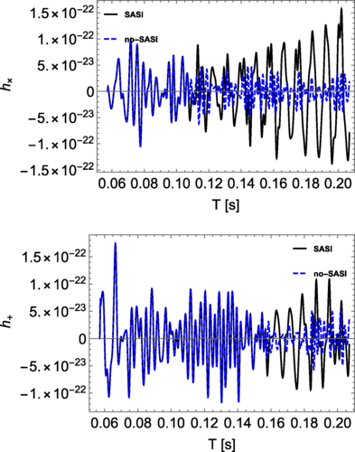

Characterizing a supernova’s standing accretion shock instability with neutrinos and gravitational waves
Zidu and his colleagues show that multi-messenger observations of core-collapse supernovae significantly improve our ability to determine the nature of the standing accretion shock instability.